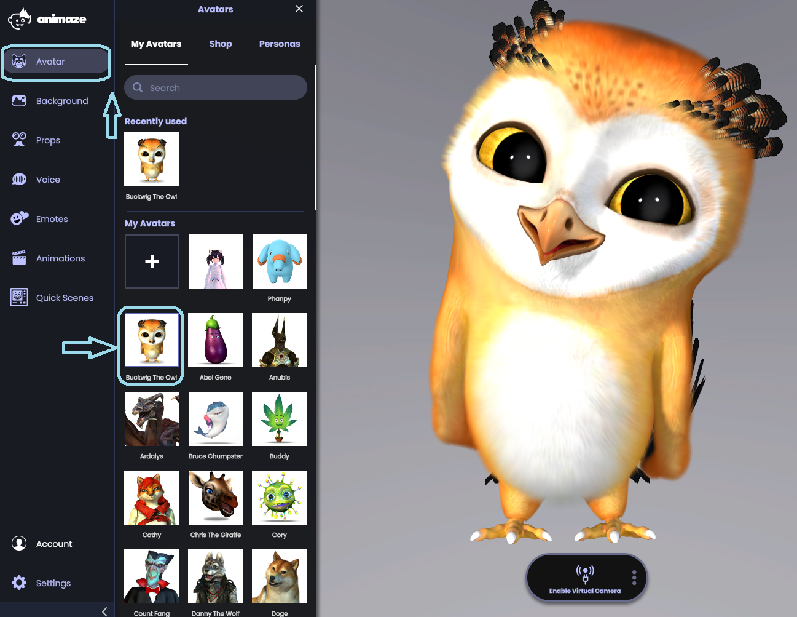
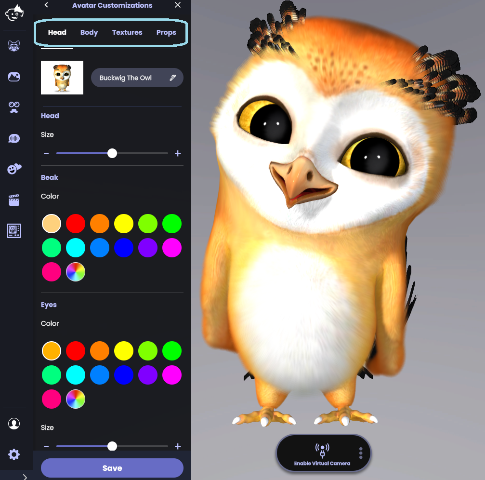
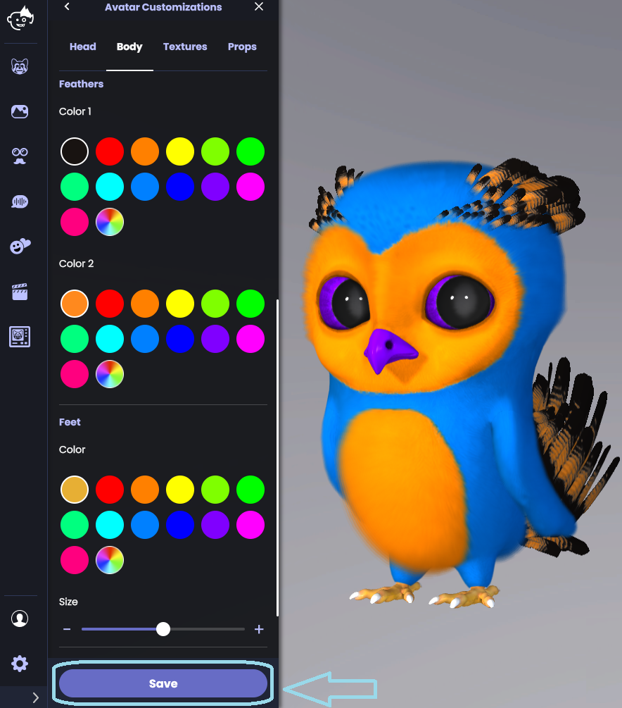

Animaze Desktop: How can I customize avatars? (shape and color)
Using an Animaze avatar doesn’t mean your avatar will look like everyone else’s. Rest assured you can put your creativity to work! Here’s how you can customize your avatar to match your personality.
1. Click on the Avatars icon in the left menu. Select an avatar and the customization drawer will automatically open.

2. The Customizations drawer has four tabs. You can navigate to each to change colors, size, or textures.

TIP: Use the color wheel to select a specific color or hexcode for the avatar.
3. Click on Save to keep your newly customized avatar.
